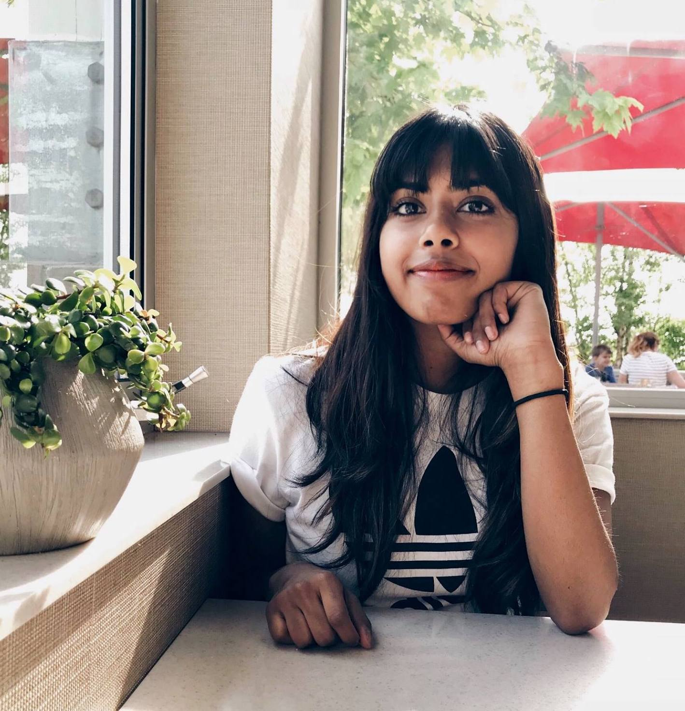

Hi, nice to meet you!
I am constantly trying to find ways to use my creativity and imagination to solve real-world problems and develop innovative solutions. I fill my life with opportunities to learn more through self guided passion projects. Learning itself is one of my passions, and I constantly use it to enable my discoveries of the latest innovations in graphic design, user experince design and application development. Combining my education in business with my current study of human centered design and engineering give me insight into how exemplary design can meet business goals.
Some of my current passion projects are related to UX/UI concepts, font-end development, and design theory. While design has become a huge part of my life, I continue to engage in my long held passions. I constantly find opportunities to express myself through what is, in my opinion, one of the most beautiful forms of art: dance. In addition, for years I have been using my blog as a platform to share my voice and opinions with people in my network.
Any questions or inquiries? Reach out to me using the links located in the footer below!